Campaign materials
Everything the congregation received, shown as issued.
A custom die-constructed pocket folder holding five double-sided, 8 1/2 × 11-inch folded inserts and a pledge card. Each piece answers one question, so a member can read what they need and set the rest aside.
What arrives first
The folder carries the campaign emblem, the anniversary dates 1829–2029, and Psalm 133:1 on the front; on the back, the church’s name and a line from Dr. Nicholas Needham on standing on the shoulders of those who went before us.
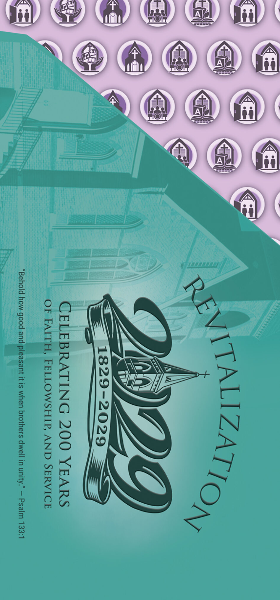
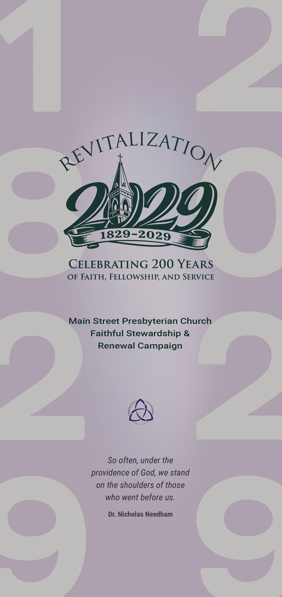
Outer panels
Ten panels, read one at a time. Each carries a single heading, a short passage of copy, an icon drawn for that area of work, and a line of Scripture or a closing phrase — enough to be understood in the time between sitting down and the service beginning.
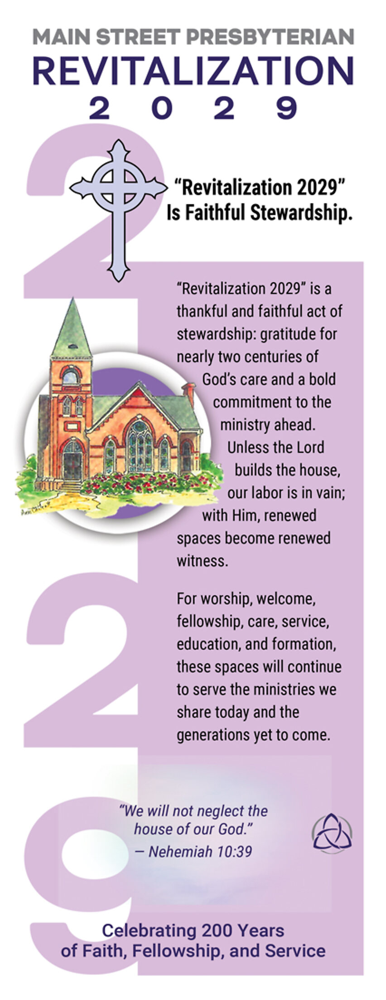
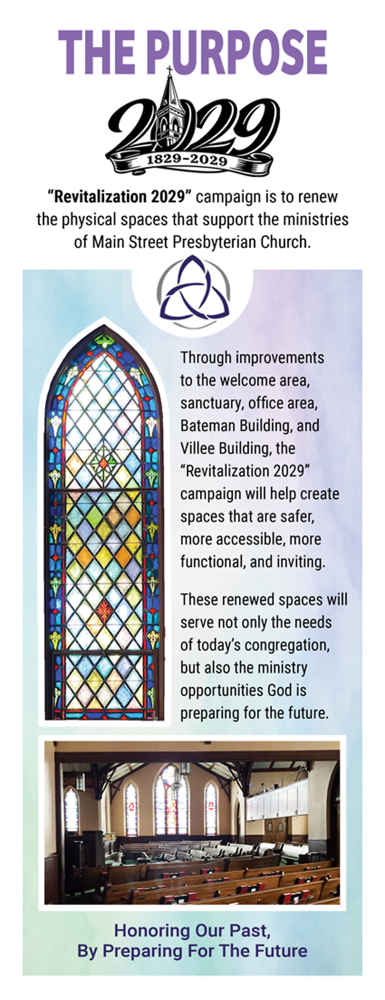
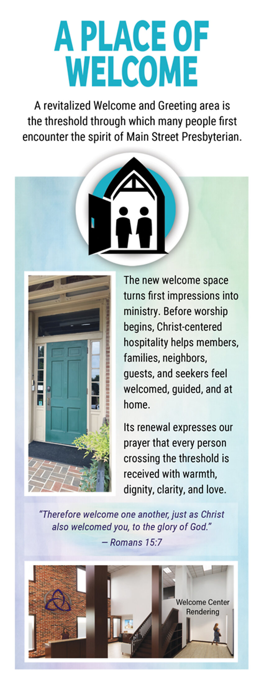
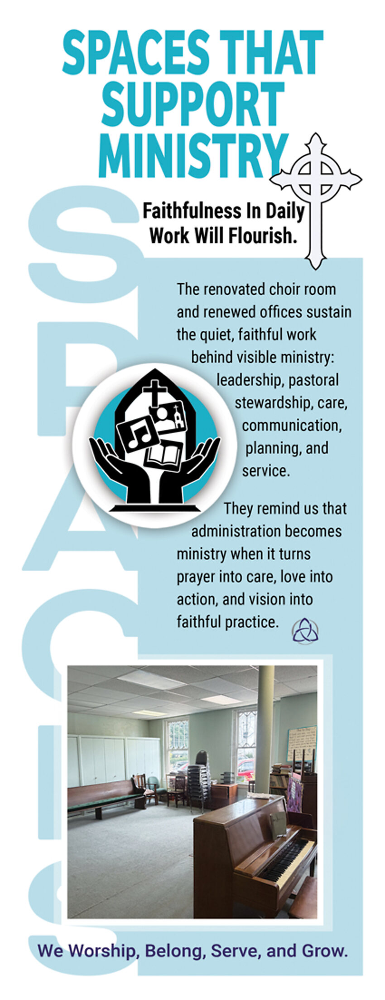
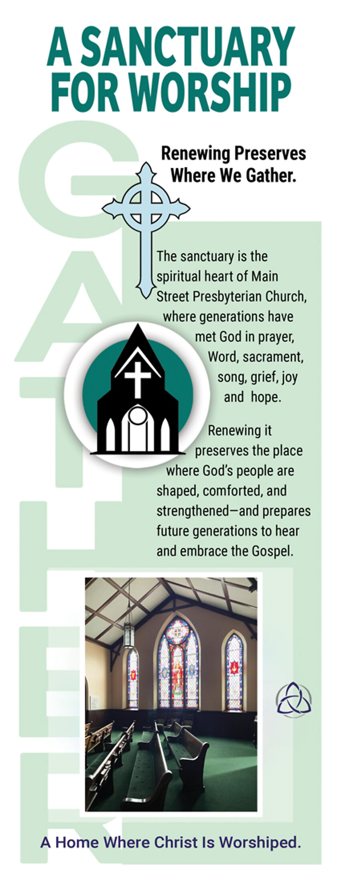
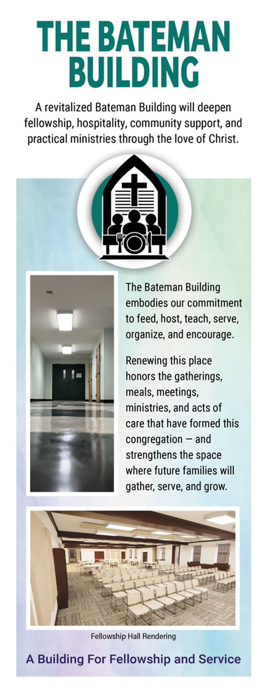
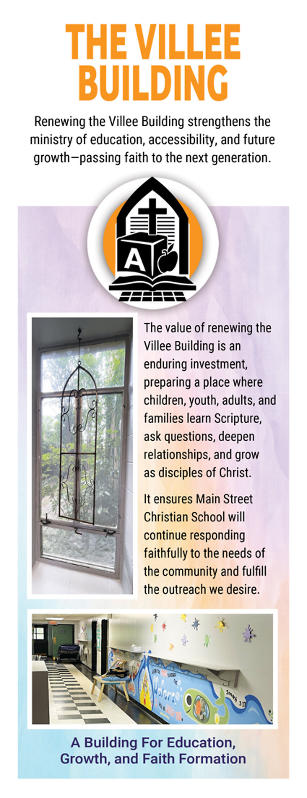
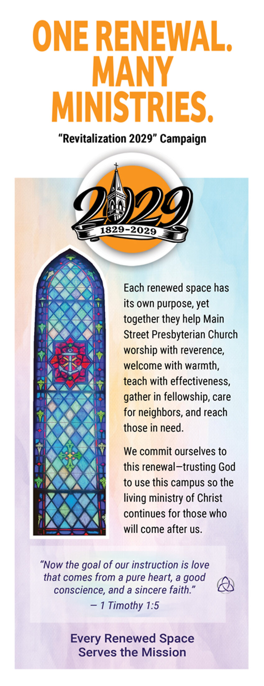
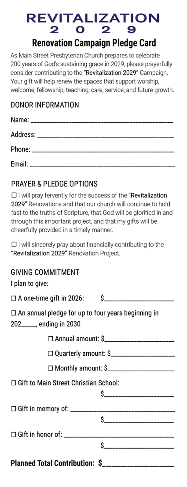
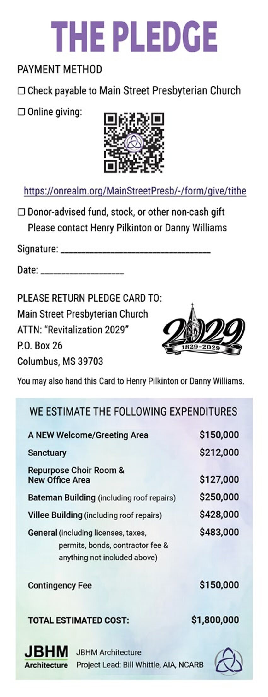
Inside spreads
Opened out, each insert gives the detail a considered decision requires: the two letters in full, the architect’s existing-and-proposed floor plans, and the renderings of the welcome center, fellowship hall, and adult Sunday school rooms.
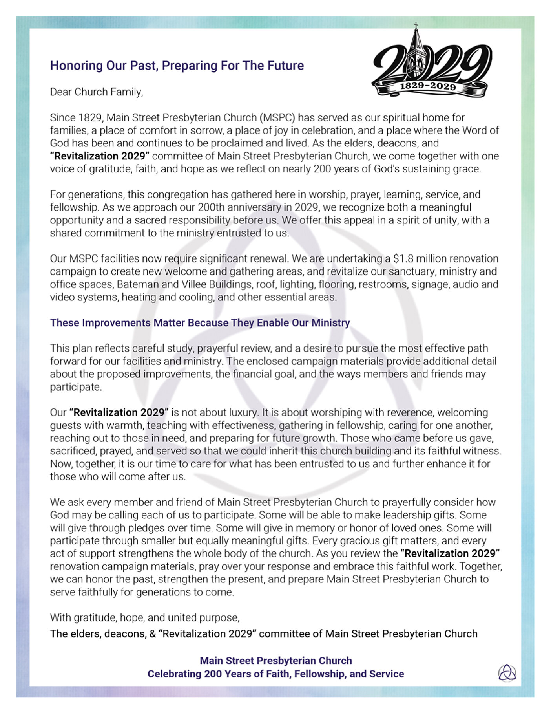
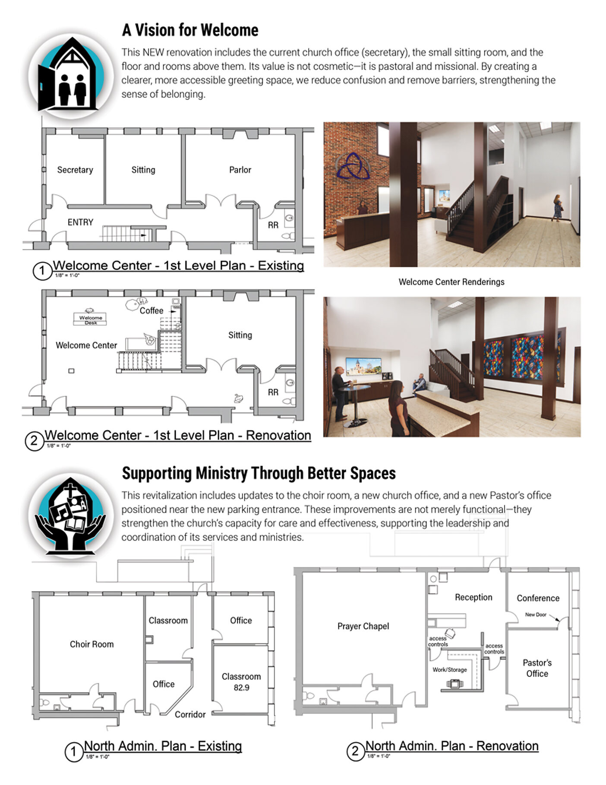
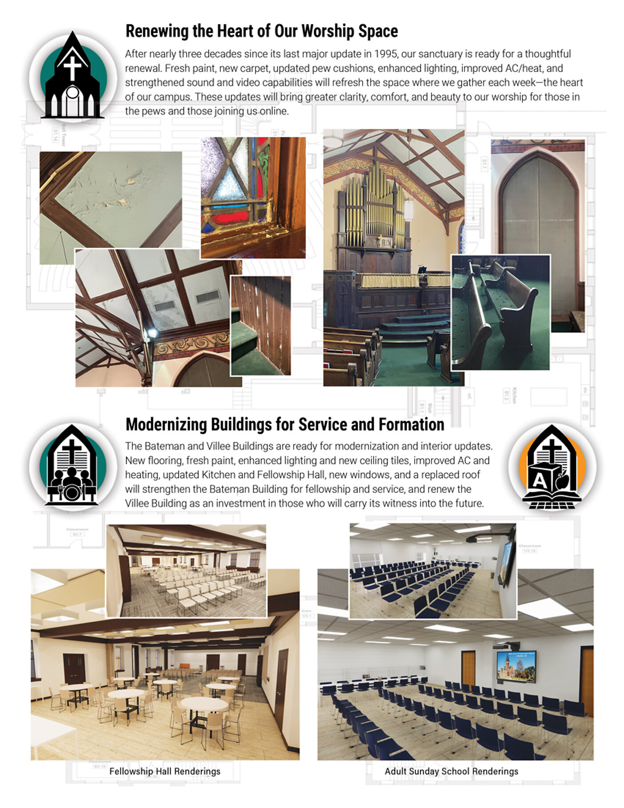
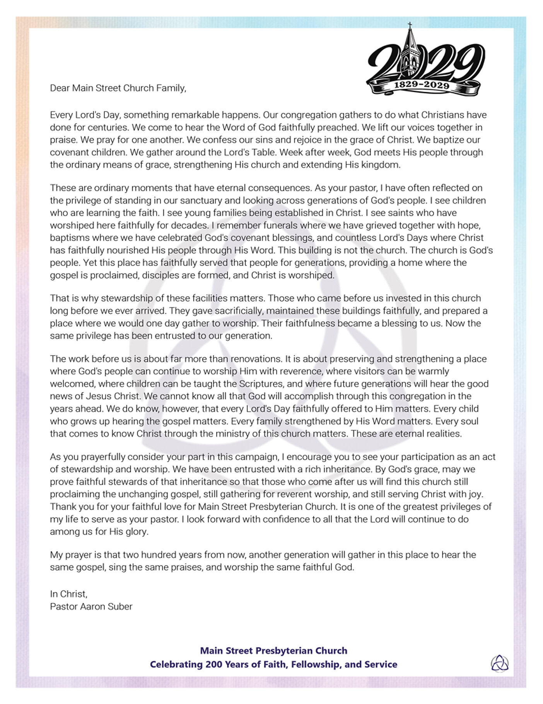
Documents
The pledge card and the campaign’s written documents, available as issued. Print the pledge card, complete it, and return it to the church — or record a pledge online.
Pledge card
Two pages. Donor information, prayer and pledge options, the giving commitment, the estimated expenditures, payment methods, and the return address.
Press release
The Douglas USA LLC announcement of the completed campaign communications engagement for Main Street Presbyterian Church.
Donor tax advantages
Charitable tax considerations for individuals, business owners, retirees, institutions, and military households. See the tax guidance.
Advisor tax planning
Written for accountants, attorneys, and financial advisors: AGI reduction, appreciated assets, and qualified charitable distributions.
One renewal. Many ministries.
We commit ourselves to this renewal — trusting God to use this campus so the living ministry of Christ continues for those who will come after us.